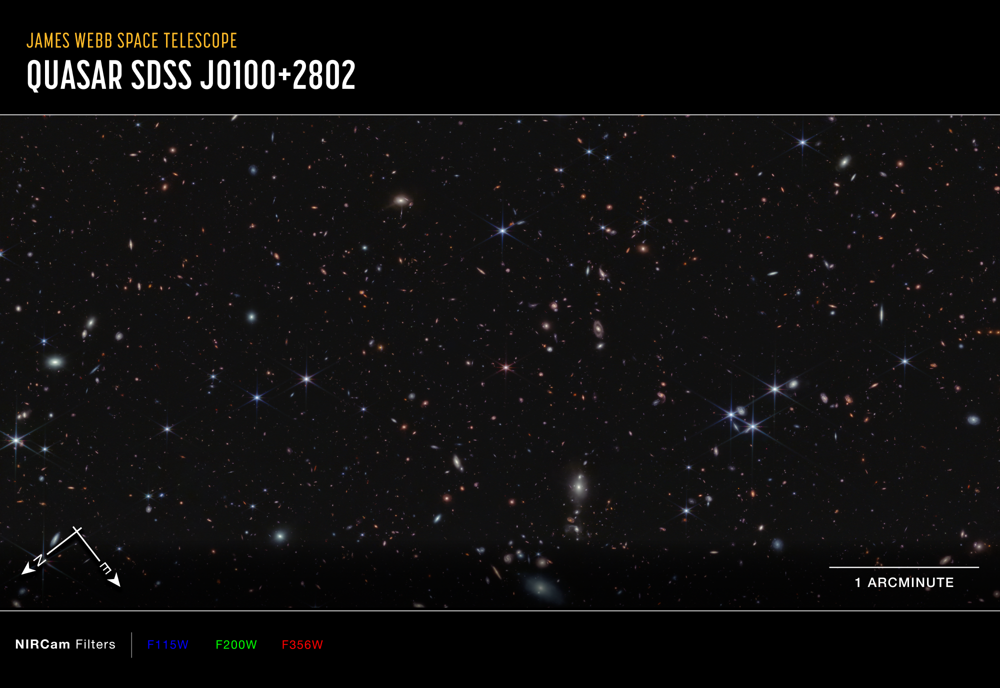
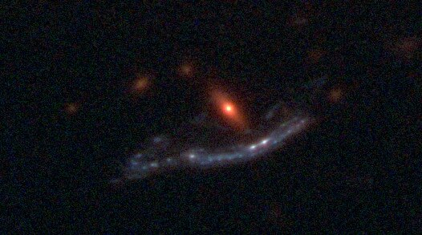
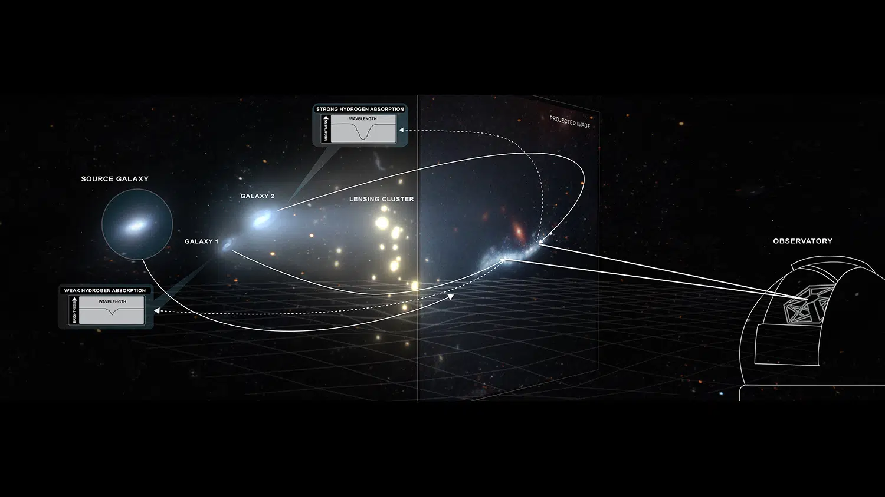
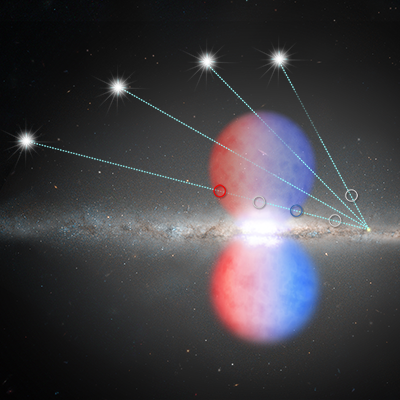

 NASA Press Release, NASA’s Webb Proves Galaxies Transformed the Early Universe (2023)  Making The Nearly Invisible, Visible: Astronomers Trace The Gas That Breathes Life Into Galaxies (2022)  Researchers Use Galaxy as a ‘Cosmic Telescope’ to Study Heart of the Young Universe Cosmic Telescope Reveals Inner Workings of Two Proto-galaxies Milky Way Raids Intergalactic 'Bank Accounts,' Hubble Study Finds (2019)  Hubble Dates Black Hole’s Last Big Meal (2017) Hubble Discovers that Milky Way Core Drives Wind at 2 Million Miles Per Hour (2015) NASA and STScI Select Hubble Fellows for 2015